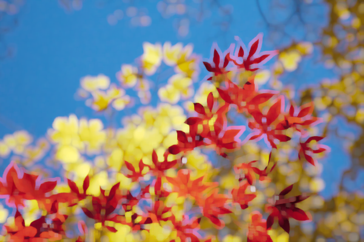
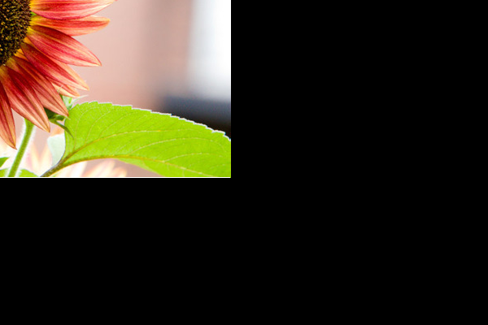

COS426 Assignment 1Image Processing — Batch Mode
Switch to: Interactive Editor
- (0.0) Brightness
- (0.5) Contrast
- (0.5) Gamma
- (0.5) Vignette
- (0.5) Saturation
- (1.5) White balance
- (1.0) Gaussian
- (0.5) Sharpen
- (0.5) Edge detect
- (1.0) Median filter
- (2.0) Bilateral filter
- (0.0) Quantize
- (0.5) Random dither
- (1.0) Floyd-Steinberg dither
- (1.0) Ordered dither
- (1.0) Sampling
- (0.5) Translate
- (0.5) Scale
- (1.5) Rotate
- (1.0) Composite
- (3.0) Morph
- (3.0) Palette
Brightness
This feature was implemented by the course staff. I used it as an example of how to loop over the pixels in an image.
Here is an example output where the image is made brigher with the luminance slider set to 0.3:
{kind=link}

Here is an example output where the image is made darker with the luminance slider set to -0.5:
{kind=link}

I did not encounter any particular challenges in implementing this.
You can include as many results as you want, but please at least include the following results:
Contrast
I implemented contrast by using the GIMP formula in the assignment description.
You can include as many results as you want, but please at least include the following results:
Push_Image=leaves.jpg&Contrast=-1

Push_Image=leaves.jpg&Contrast=0.7
Push_Image=leaves.jpg&Contrast=-0.8

{kind=link}
{kind=link}
{kind=link}
Gamma
Once again, this filter was fairly straight forward. I implemented gamma correction using the formulas provided and looping through every pixel and applying the formula.
You can include as many results as you want, but please at least include the following results:
Push_Image=mesa.jpg&Gamma=1

Push_Image=mesa.jpg&Gamma=-1.6
{kind=link}
{kind=link}
Vignette
We implemented vignette with linear light falloff in this implementation. Although we originally tried the COS^4 implementation, we were not confident this implementation was exactly perfect, so we switched to the linear implementation.
You can include as many results as you want, but please at least include the following results:
Push_Image=mesa.jpg&Vignette=0.25;1
Push_Image=mesa.jpg&Vignette=0;0.75
{kind=link}
{kind=link}
Saturation
Once again, this filter was straight forward to implement by just following the guidelines in the assignment page. We looped through every pixel, applied the formula, and clamped the value of the new pixel to ensure it didn't go out of bounds.
You can include as many results as you want, but please at least include the following results:
Push_Image=leaves.jpg&Saturation=1

Push_Image=leaves.jpg&Saturation=-0.5
{kind=link}
{kind=link}
White balance
Converted each pixel to xyz colorspace and then converted the xyz pixel to the lms color space. doing this allowed us to perform the white balance operation as detailed in the assignment description.
You can include as many results as you want, but please at least include the following results:
Push_Image=town.jpg&White_Balance=[0.5,0.5,0.5,1]

![Push_Image=town.jpg&White_Balance=[0.5,0.5,0.5,1]](batch.html?Push_Image=town.jpg&White_Balance=[0.5,0.5,0.5,1]){kind=link}
Gaussian
We created a linearly separable gaussian filter to improve speed. We padded by using the pixel values closest to the border. Besides this, we simply did what was on the assignment page.
You can include as many results as you want, but please at least include the following results:
Push_Image=leaves.jpg&Gaussian=4
Push_Image=man.jpg&Gaussian=7
{kind=link}
{kind=link}
Sharpen
We applied a 3x3 kernel with the center equal to 9 and the outside equal to -1. Once again, we padded with border values.
You can include as many results as you want, but please at least include the following results:
Push_Image=leaves.jpg&Sharpen=
Push_Image=woman.jpg&Sharpen=
{kind=link}
{kind=link}
Edge detect
We convolved with a 3x3 kernel like in the sharpening filter, but this time the center was set to 8. We then subtracted the resulting pixel value from 1 for better visualization.
You can include as many results as you want, but please at least include the following results:
Push_Image=leaves.jpg&Edge=
Push_Image=woman.jpg&Edge=
{kind=link}
{kind=link}
Median filter
We convolved with a square filter that set the pixel value to the median of its neighbors. We did not apply quick-select, but rather just sorted and chose the median term.
You can include as many results as you want, but please at least include the following results:
Push_Image=leaves.jpg&Median=3

Push_Image=leaves.jpg&Median=5
Push_Image=leaves.jpg&Median=8
{kind=link}
{kind=link}
{kind=link}
Bilateral filter
For the bilateral filter, we convolved with a window and applied the weights to each pixel as described in the assignment description. We made sure to normalize the weights so that the filter summed to 1.
You can include as many results as you want, but please at least include the following results:
Push_Image=mesa.jpg&Bilateral=4;2
Push_Image=mesa.jpg&Bilateral=5;3
{kind=link}
{kind=link}
Random dither
We applied the random dither protocol as described in the assignment description
You can include as many results as you want, but please at least include the following results:
Push_Image=mesa.jpg&Random=
{kind=link}
Floyd-Steinberg dither
We applied the Floyd-Steinberg equation as seen in lecture. Little of note in this filter.
You can include as many results as you want, but please at least include the following results:
Push_Image=mesa.jpg&Floyd-Steinberg=
{kind=link}
Ordered dither
Utilized the Bayer 4 kernel provided in the assignment description to perform the ordered dither algorithm.
You can include as many results as you want, but please at least include the following results:
Push_Image=mesa.jpg&Ordered=
{kind=link}
Sampling
For point sampling, we returned the nearest pixel to the x,y values passed into the arguments. For the bilinear sampling, we performed the protocol detailed in precept by taking the values around the pixel. If the x,y values were out of bounds, we took the nearest pixel in bounds.
For the gaussian sampling, we performed a gaussian convolution around the pixel as described in precept and made sure to noramlize the weights so that the outcome summed to 1.
You can include as many results as you want, but please at least include the following results:
Translate
(Your description of your implementation of Translate goes here...)
You can include as many results as you want, but please at least include the following results:
Push_Image=flower.jpg&Translate=-317;-182;point
Push_Image=flower.jpg&Translate=-317;-182;bilinear

Push_Image=flower.jpg&Translate=-317;-182;gaussian
{kind=link}
{kind=link}
{kind=link}
Scale
We scaled using the protocol described in the assignment description
You can include as many results as you want, but please at least include the following results:
Push_Image=mesa.jpg&Scale=2.03;point

Push_Image=mesa.jpg&Scale=2.03;bilinear
Push_Image=mesa.jpg&Scale=2.03;gaussian
{kind=link}
{kind=link}
{kind=link}
Rotate
We attempted to perform rotate, but had problems ensuring the image fit within the bounds of the frame.
You can include as many results as you want, but please at least include the following results:
Push_Image=mesa.jpg&Rotate=0.628318530718;point
Push_Image=mesa.jpg&Rotate=0.628318530718;bilinear

Push_Image=mesa.jpg&Rotate=0.628318530718;gaussian
{kind=link}
{kind=link}
{kind=link}
Composite
We performed composite in the same way that the assignment page instructed us to.
You can include as many results as you want, but please at least include the following results:
Push_Image=man.jpg&Push_Image=doge.jpg&Push_Image=alpha.png&Get_Alpha=&Composite=

{kind=link}
Morph
Once again, we followed nearly step for step from the precept instructions for morph.
You can include as many results as you want, but please at least include the following results:
Push_Image=chang.jpg&Push_Image=halber.jpg&Morph=(0,1,0.1)
){kind=link}
Palette
For palette I used the Lloyd algorithm and intialized centroid to be primary colors to improve results. We then iterated through every pixel and assigned it to the closest centroid. Then we recalculated the centroids location in the color space.
You can include as many results as you want, but please at least include the following results:
Push_Image=leaves.jpg&Palette=3
{kind=link}
Collaboration
Will Drury (wdrury)